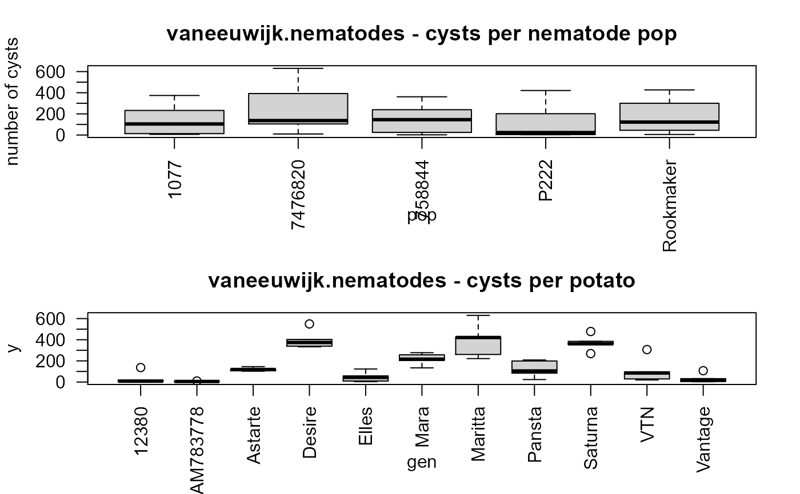
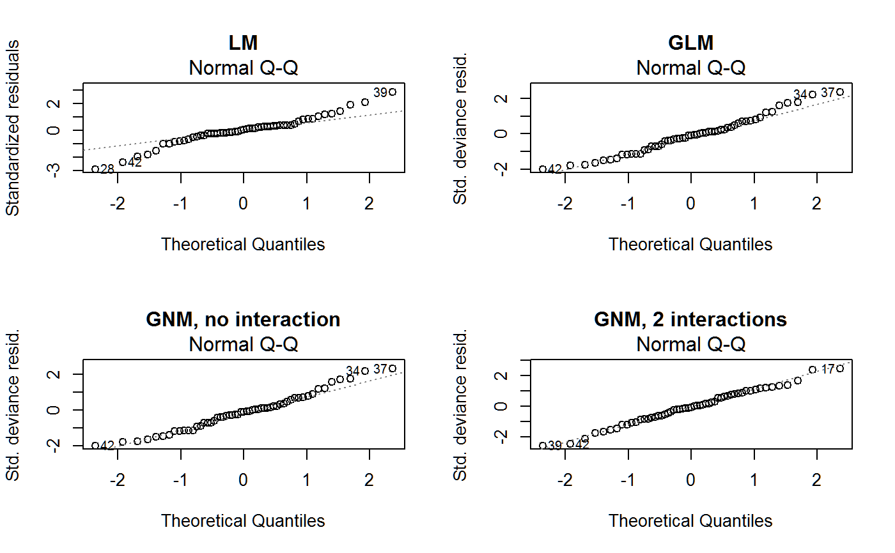
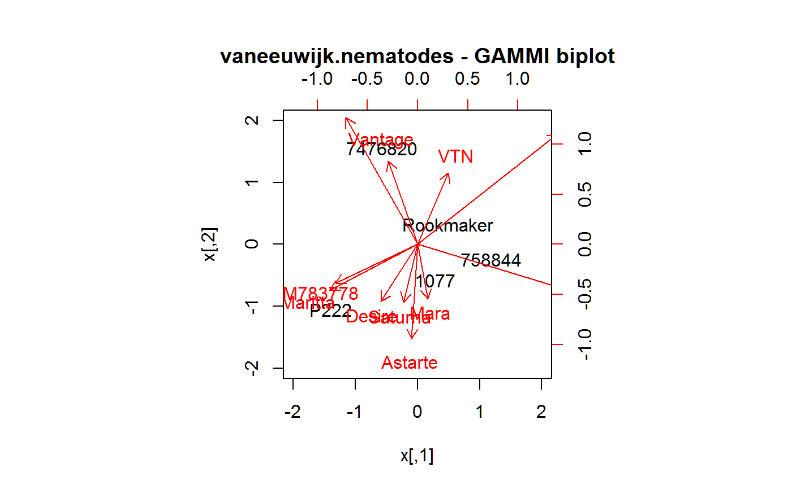

vaneeuwijk.nematodes.RdThe number of cysts on 11 potato genotypes for 5 potato cyst nematode populations.
data("vaneeuwijk.nematodes")
A data frame with 55 observations on the following 3 variables.
genpotato genotype
popnematode population
ynumber of cysts
The number of cysts on 11 potato genotypes for 5 potato cyst nematode populations belonging to the species Globodera pallida. This is part of a larger table in . The numbers are the means over four or five replicates.
Van Eeuwijk used this data to illustrate fitting a generalized linear model.
Fred A. van Eeuwijk, (1995). Multiplicative Interaction in Generalized Linear Models. Biometrics, 51, 1017-1032. https://doi.org/10.2307/2533001
Arntzen, F.K. & van Eeuwijk (1992). Variation in resistance level of potato genotypes and virulence level of potato cyst nematode populations. Euphytica, 62, 135-143. https://doi.org/10.1007/BF00037939
library(agridat) data(vaneeuwijk.nematodes) dat <- vaneeuwijk.nematodes # show non-normality op <- par(mfrow=c(2,1), mar=c(5,4,3,2)) boxplot(y ~ pop, data=dat, las=2, ylab="number of cysts") title("vaneeuwijk.nematodes - cysts per nematode pop") boxplot(y ~ gen, data=dat, las=2)par(op) # \dontrun{ # normal distribution lm1 <- lm(y ~ gen + pop, data=dat) # poisson distribution glm1 <- glm(y ~ gen+pop,data=dat,family=quasipoisson(link=log)) anova(glm1)#> Analysis of Deviance Table #> #> Model: quasipoisson, link: log #> #> Response: y #> #> Terms added sequentially (first to last) #> #> #> Df Deviance Resid. Df Resid. Dev #> NULL 54 8947.4 #> gen 10 7111.4 44 1836.0 #> pop 4 690.6 40 1145.4libs(gnm) # main-effects non-interaction model gnm0 <- gnm(y ~ pop + gen, data=dat, family=quasipoisson(link=log)) # one interaction gnm1 <- gnm(y ~ pop + gen + Mult(pop,gen,inst=1), data=dat, family=quasipoisson(link=log))#> Initialising #> Running start-up iterations.. #> Running main iterations......................................................... #> .......................... #> Done# two interactions gnm2 <- gnm(y ~ pop + gen + Mult(pop,gen,inst=1) + Mult(pop,gen,inst=2), data=dat, family=quasipoisson(link=log))#> Initialising #> Running start-up iterations.. #> Running main iterations............. #> Done# anova(gnm0, gnm1, gnm2, test="F") # only 2, not 3 axes needed # match vaneeuwijk table 2 # anova(gnm2) ## Df Deviance Resid. Df Resid. Dev ## NULL 54 8947.4 ## pop 4 690.6 50 8256.8 ## gen 10 7111.4 40 1145.4 ## Mult(pop, gen, inst = 1) 13 716.0 27 429.4 ## Mult(pop, gen, inst = 2) 11 351.1 16 78.3 # compare residual qq plots from models op <- par(mfrow=c(2,2)) plot(lm1, which=2, main="LM") plot(glm1, which=2, main="GLM") plot(gnm0, which=2, main="GNM, no interaction") plot(gnm2, which=2, main="GNM, 2 interactions")par(op) # extract interaction-term coefficients, make a biplot pops <- pickCoef(gnm2, "[.]pop") gens <- pickCoef(gnm2, "[.]gen") coefs <- coef(gnm2) A <- matrix(coefs[pops], nc = 2) B <- matrix(coefs[gens], nc = 2) A2=scale(A) B2=scale(B) rownames(A2) <- levels(dat$pop) rownames(B2) <- levels(dat$gen) # near-match with vaneeuwijk figure 1 biplot(A2,B2, expand=2.5,xlim=c(-2,2),ylim=c(-2,2), main="vaneeuwijk.nematodes - GAMMI biplot")# }